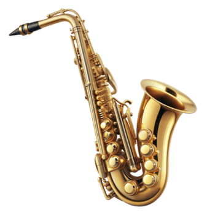
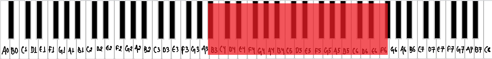
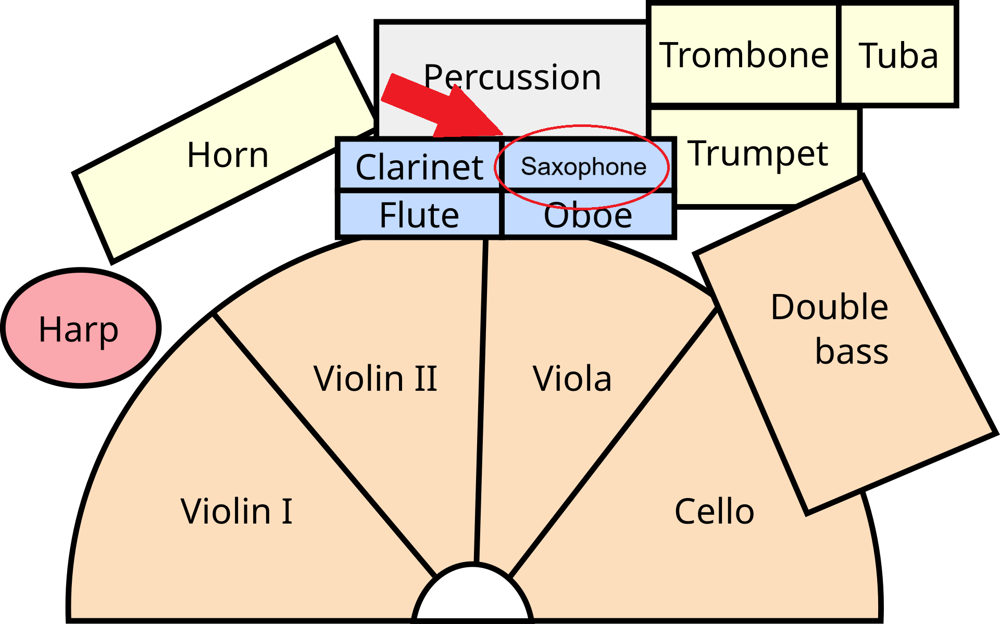
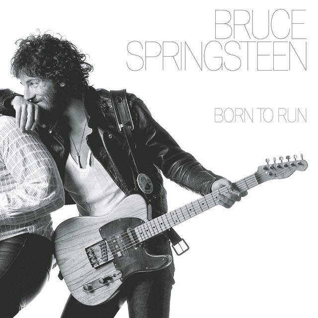
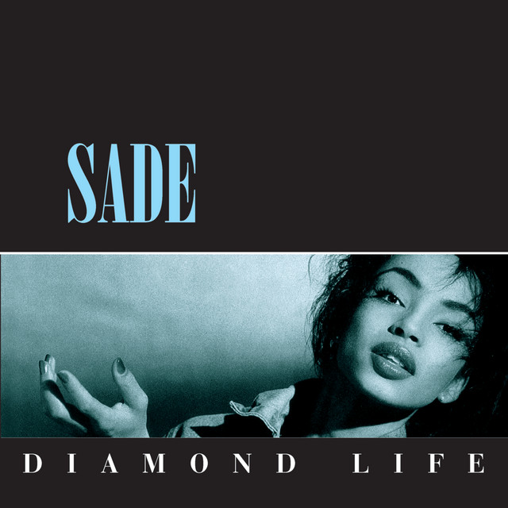
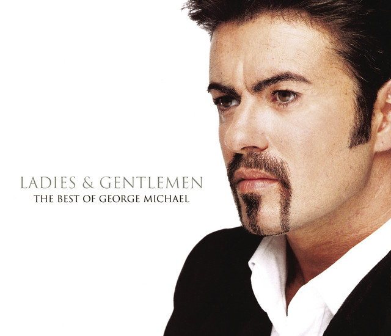
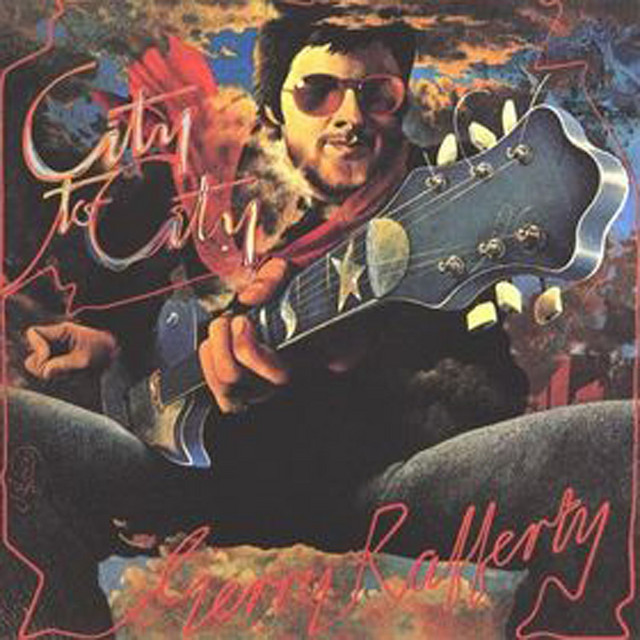

What is a saxophone?
The saxophone is a woodwind instrument with a single reed and a conical metal body. It was invented by Adolphe Sax in the 1840s. Although it is made of brass, it is classed as a woodwind because the reed makes the sound. [1]


Musical range and clef
The alto saxophone, the most common size, has a written range from B♭3 to about F6, with extra notes in the extreme high register called the altissimo. Saxophones come in several sizes, and each is pitched differently. [2]
Saxophone parts are written in the treble clef, whatever the size of the instrument. Like the clarinet, it is a transposing instrument, so the sounding pitch differs from what is written. [3]

Where is the saxophone seated in an orchestra?
Woodwinds sit in the middle of the orchestra, behind the strings and in front of the brass and percussion. From the conductor's podium, the flutes are on the left of the woodwind rows, followed by the oboes, clarinets and bassoons toward the right. The saxophone is not a regular member of the orchestra. When a piece calls for one, the player is usually placed near the clarinets. [4]
Popular songs/pieces that feature the instrument:

Born To Run

Smooth Operator

Careless Whisper

Baker Street
References
- Wikipedia, "Saxophone".
- Wikipedia, "Saxophone".
- Wikipedia, "Saxophone".
- Rockford Symphony Orchestra, "Are all orchestras arranged on stage the same way?".